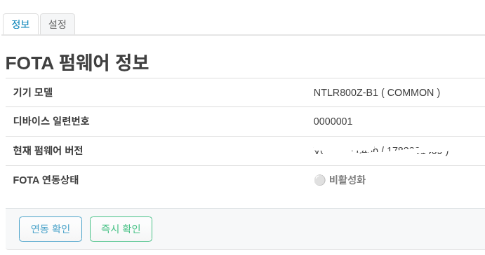
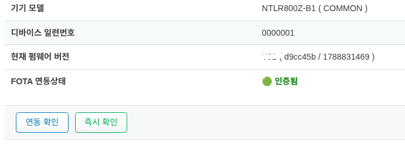
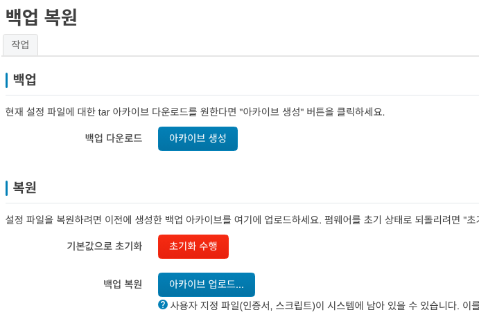

장치 관리 및 식별
단말 정보 확인
단말의 정보는 상태->개요 에 표시됩니다.

NTLR800Z-B1모델은 디바이스의 고유 번호인 디바이스 일련번호 가 기본이 되고 있습니다.
펌웨어 업데이트 방법
펌웨어 업데이트는 자사의 FOTA 서버를 통해서만 진행이 가능합니다.
기본 화면은 아래와 같습니다.


FOTA 연동상태를 확인하여야 하며 비활성화 인 경우는 시스템->시스템 업데이트->설정 에서 FOTA 기능 활성화 를 선택하십시요.
FOTA 기능 활성화 를 선택한 후에는 연동 확인**과 **즉시 확인 버튼이 활성화 됩니다.
연동 확인 혹은 **즉시 확인* 버튼을 누르면 아래처럼 활성화가 됩니다.


만약에 자동으로 업데이트를 원하면 시스템->시스템 업데이트->설정 에서 자동 업데이트 설정 을 활성화 하시면 됩니다.
서버에서 업데이트 내용이 있으면, 업데이트가 진행 됩니다.
위험
업데이트가 진행중에는 전원을 끄거나 USIM을 제거하는 동작을 해서는 절대 안됩니다.
공장 초기화
공장 초기화는 두가지 방법을 사용할수 있습니다.
관리 UI 접속이 가능할때


시스템->Backup / Restore Config 에서 복원 기본값으로 초기화
초기화 수행을 실행 합니다.초기 설정 화면 (http://192.168.15.1) 으로 접속하여 로그인 합니다.
관리 UI 접속이 가능하지 않은 경우
전원을 연결하고 디바이스를 뒤집어 봅니다.
reset 이라고 써있는 부분을 약 5초간 누르면, LTE LED가 점등을 시작하며, 빠르게 점등이 가속되면 누르고 있는것을 떼면 됩니다.
약 5분정도 지난후에 초기 설정 화면(http://192.168.15.1) 으로 접속하여 로그인 합니다.
위험
초기화가 진행중에 일부러 전원을 자주 끄는 행동을 해서는 안됩니다.